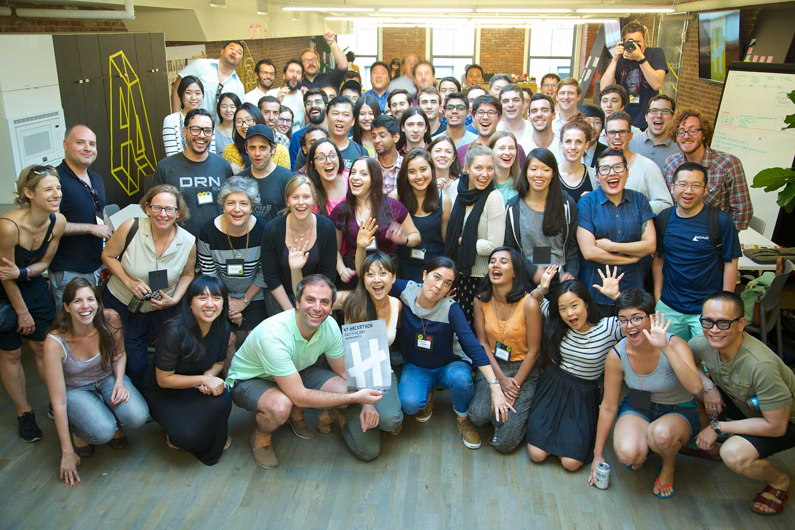
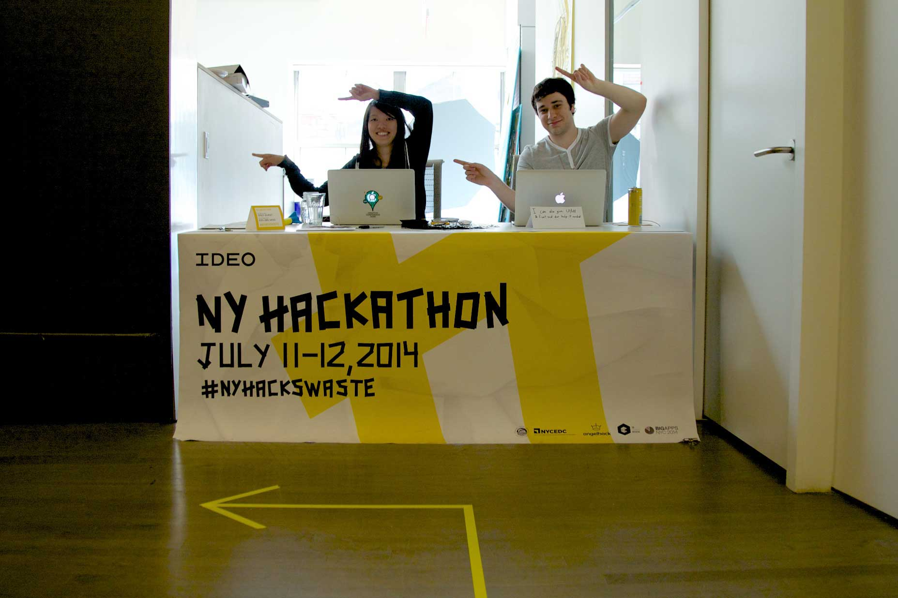
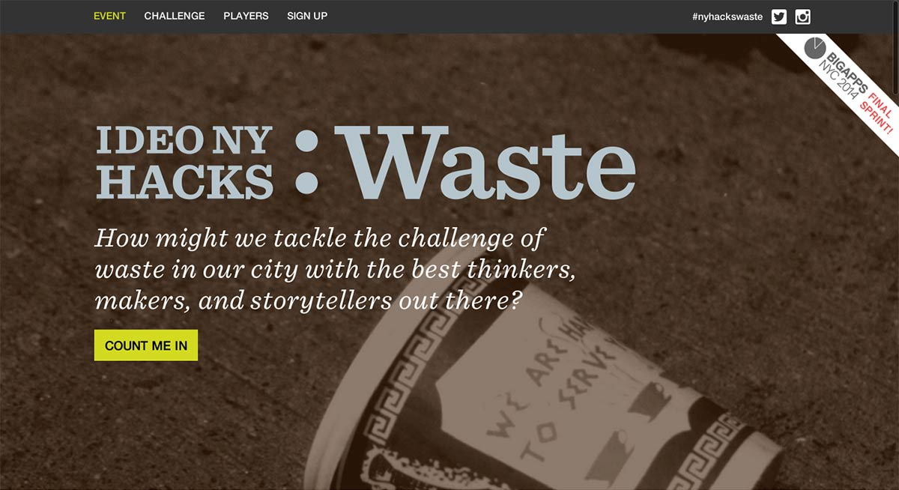
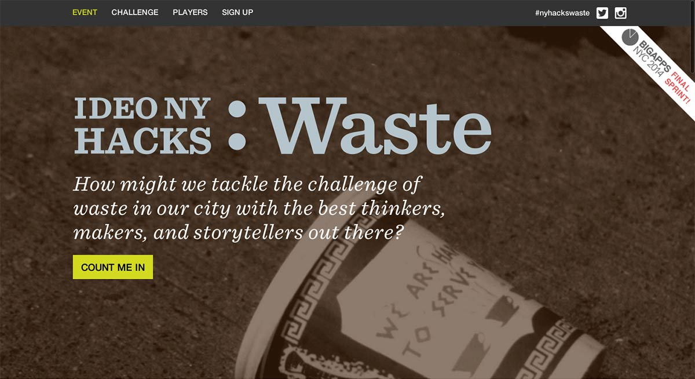

IDEO Hackathon
Human centered twist on the hackathons
During my summer internship at IDEO I had the opportunity to work on many non-client “whitespace” projects, one of which was a waste themed hackathon. My main role or this project was development and a bit of design, but I also helped with other tasks such as; event planning, environmental design, procuring and negotiating with sponsors, as well as mentorship for hackathon participants. A unique twist to the normal hackathon structure came about when we were exploring a new, more human centered approach to pitching ideas. Instead of each person pitching an idea and creating teams around that person’s idea, we came up with an approach where everyone brainstorms ideas around 3 central concepts, on foamcore and stickynotes of course, then forms teams based around these crowdsourced ideas.
  

Credits:
IDEO New York — branding and co-design
Back to Work